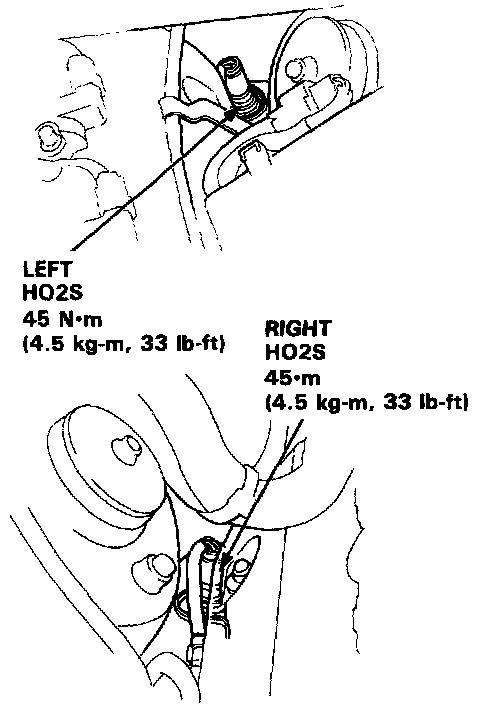

Oxygen Sensor: Service and Repair
Oxygen Sensor Service and Repair:

REMOVAL
- Disconnect the electrical connector(s)
- Remove Heated Oxygen (HO2S) Sensor(s)
INSTALLATION
- Install sensor(s) with small amount of anti-seize applied to threads
- Tighten To 44Nm (33 Lb-ft)
- Reinstall Electrical Connector(s)